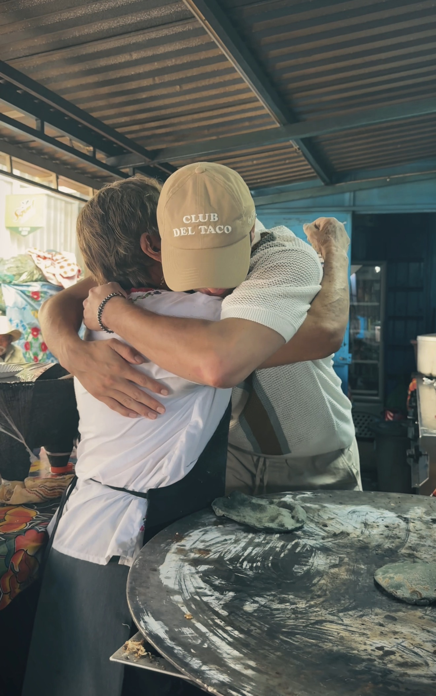
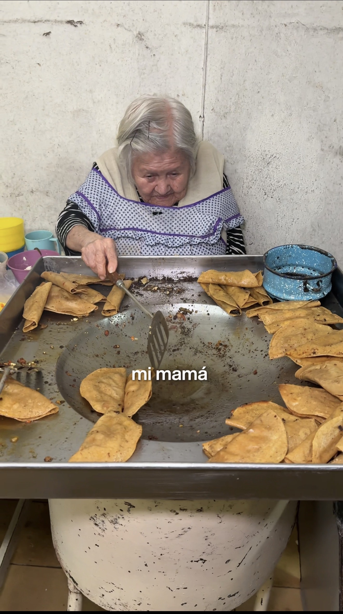
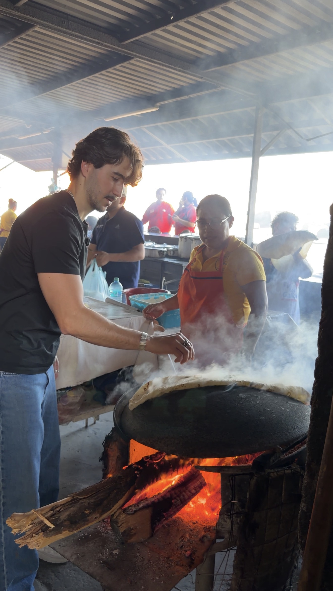

La Vuelta a México en 80 Tacos
Esta es la historia de cómo pasó. Y la propuesta de qué hacemos con eso.
México es el único país del mundo donde, sin haber nacido ahí, puedes pertenecer. Por eso las comillas.
En tres años
personas que se quedaron
Sin plan. Sin guion. Sin más estrategia que la honestidad. A un ritmo de 500 personas al día.
¿Por qué se quedaron?
El filtro
"Cuando yo sea abuelito, ¿qué historias les contaré a mis nietos?"
No filmo las mejores taquerías de México.
Filmo las historias que le contaré a mis nietos.
Es distinto.
Lo que descubrimos
Asociación
Cuando conoces la historia detrás del plato, sabe más. La emoción se convierte en recuerdo que dura décadas. Si te murieras mañana, no pedirías el mejor wagyu. Pedirías el caldito que te hacía tu mamá los domingos.
Atención
La moneda más cara del siglo. 2 millones de personas nos dan la suya cada día sin saltarse ni uno. Más de lo que alcanza el noticiero de mayor audiencia del país en un día.

Tenemos la atención. Ahora, las pruebas.
La audiencia
0
0
TikTok
0
YouTube
0
Total: 0
Engagement Rate Reels
10.7%
5x el estándar del sector
Views promedio por post
0
48 guiones filmados

Mercado Zaragoza · Puebla
Huele a maíz recién molido y a manteca caliente a las tres de la mañana. Araceli se levanta a esa hora cada día a moler el maíz en el molino. Un machete cuesta 90 pesos. Ella no sabe cuánto gana. Trabaja todos los días del año menos el 25 de cada mes. Y cuando alguien le dice "gracias" con la mirada, ese instante vale más que cualquier estrella Michelin.
1 millón+ de views · El video más compartido del canal
Los Kumiai · Valle de Guadalupe
Quedan dos personas en el planeta que hablan su lengua. Cocinan sobre piedra volcánica con ingredientes que no tienen nombre en español.
Doña Esthela · Valle de Guadalupe
Lavaba ropa ajena. Hoy tiene un Bib Gourmand. Su carne asada huele a leña y a madrugada en el desierto.
Doña Humo · Sonora
Madre soltera. Burritos de machaca que saben a desierto y a resistencia. El contenido más memorable del archivo.
Si esto ya resuena, no hace falta seguir bajando.
Hablemos
El sistema
Guía de Restaurantes Españoles
El imán
México me enseñó el verdadero significado de "mi casa es tu casa". Es hora de regalarles la guía de restaurantes de mi gente en su casa adoptiva. Cada restaurante recibe una receta escrita a mano que me regaló mi abuela antes de morir, para enmarcarla en su restaurante y que los comensales puedan probarla.
Ver proyecto →La Selección del Taco
El juego
16 taquerías compiten en formato Mundial. El orgullo regional mexicano como motor de viralidad. La audiencia no mira el torneo — juega el torneo.
Ver proyecto →La Vuelta a México en 80 Tacos
La religión
Serie documental de formato largo. Profundidad Anthony Bourdain. 80 historias que le contaré a mis nietos, recorriendo un país que no cabe en un reel de 30 segundos.
La ventana
días
La gran final de La Selección del Taco coincide con el pitido inicial del Mundial FIFA 2026 en México. 11 de junio.
La próxima vez que el mundo entero mire a México así no está en el calendario.
Y para cruzar esa ventana, hace falta un equipo.
El equipo
"Llevo 60 documentales y nunca vi a alguien que hiciera esto con comida."
El productor ganador de Emmy vio tres reels. Llamó al día siguiente. No le pagamos por decirlo. Nos pidió entrar.
Calendario
México Mágico — La historia de Aniol
Tengo hambre.